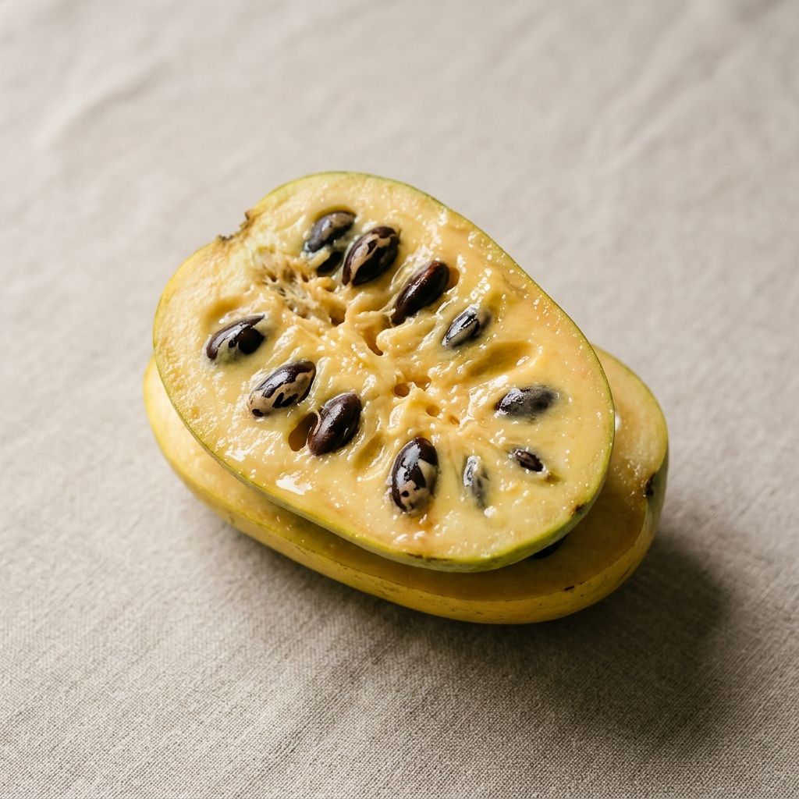

강력한 항암 작용
포포에 함유된 '아세토게닌' 성분은 강력한 항암 활성 물질로, 암세포의 성장을 억제하는 데 도움을 줄 수 있습니다.
포포는 북미 열대과일로, 숲 속의 버터라고 불릴 만큼 부드럽고 달콤합니다.
망고, 바나나, 파인애플을 섞어놓은 듯한 신비로운 맛과 크리미한 식감은 한 번 맛보면 잊을 수 없는 특별함을 선사합니다. 해미포포농장은 한국의 토양에 맞게 정성껏 재배하여 가장 신선한 상태로 전달합니다.

맛뿐만 아니라 건강에도 탁월한 슈퍼푸드 포포의 놀라운 효능을 확인하세요.
포포에 함유된 '아세토게닌' 성분은 강력한 항암 활성 물질로, 암세포의 성장을 억제하는 데 도움을 줄 수 있습니다.
풍부한 비타민과 미네랄, 항산화 물질이 체내 활성산소를 제거하여 세포 노화를 방지합니다.
다량의 식이섬유가 포함되어 있어 장 운동을 원활하게 하고 소화 기능 개선에 탁월합니다.
봄에는 짙은 자줏빛의 매혹적인 꽃을 피우고, 여름에는 크고 넓은 잎사귀로 싱그러움을 뽐냅니다. 병해충에 강해 친환경적으로 자라는 포포나무는 자연 그대로의 생명력을 품고 있습니다.
해미포포농장은 맑은 공기와 깨끗한 물이 흐르는 자연 속에 자리 잡고 있습니다.
우리는 인위적인 방법을 배제하고 자연의 흐름에 순응하며 포포를 키웁니다. 나무 한 그루, 열매 하나에 농부의 땀과 정성을 담아 가장 완벽한 순간에 수확합니다. 자연이 주는 최고의 건강을 여러분의 식탁에 올리겠습니다.
"자연의 순리대로 키운 포포만이 진정한 맛과 향을 낼 수 있습니다."
신선한 포포는 매년 9월 중순부터 10월 말까지만 한정적으로 수확 및 판매됩니다.
가장 맛있는 시기에만 만날 수 있는 특별함을 놓치지 마세요.